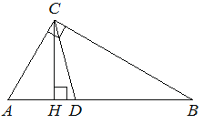

Впишите правильный ответ.
Острый угол B прямоугольного треугольника ABC равен 25°. Найдите величину угла между высотой CH и биссектрисой CD, проведёнными из вершины прямого угла C. Ответ дайте в градусах.

КЭС: 7.1 Фигуры на плоскости
Тип ответа: Краткий ответ
Источник ФИПИ